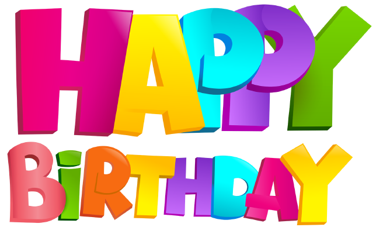
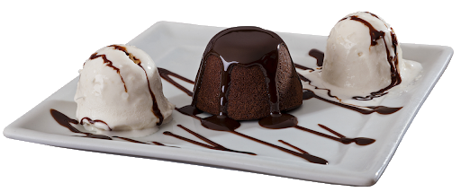
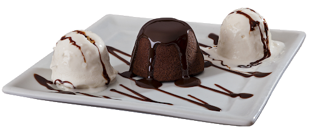

❤️ Ana Carol! Minha gordinha... 🌻
GORDAAAAAAAAAAAAAAAAAAAAAAAAAAAAAAAAAAAAAAAAAAA! Nada não... Só
queria começar a cartinha apropriadamente: gritando, para variar!! KKK
Você deve estar se perguntando o que diabos eu fiquei fazendo até agora né... DESCULPA EU porque eu queria
te entregar tanto maisssss, queria mesmo poder te dar vários presentes (eu amo presentear tanto quanto você
gosta de ganhar presentes). Não sou boa com as palavras, mas aquela história do mundo é verdade... Gorda,
quem nós temos ao final do dia? Você pode me responder "nós mesmos, ué", e eu concordarei... Entretanto, nós
mesmos somos formados de tanta coisa e eu acredito que a amizade que a gente cultiva com as outras pessoas
cria raízes profundas no nosso
MENINA, quem olharia para gente e pensaria "Alá, duas meninas feitas uma para a outra"... Você me fez
perceber quanto uma pessoa é significativa na vida da outra! Obrigado :)
Gordinha, eu torço tanto para que um dia todos possam reconhecer o quão incrível você é! Você é uma mulher
forte, eu admiro isso demais...
Sempre que me perguntam de quem eu sou fã eu respondo que é você e a Lady Gaga (tem mais, mas se eu não
lembro significa que não é tão importante...)
GORDAAAAAAAAAAAAAAAAAAAAA EU AMO MUITO VOCÊ MEU FOGUETINHO!!!!
Tenho tantas coisas ainda para te falar, mas eu deixo para quando vier para cá ficar embuchada de tannntoooo
comer gostozurasssss hihihihihihihiih
Têm coisas, momentos, sentimentos, paixões, pensamentos que só nós duas entendemos. Evoluímos muitoooo como
amigas, e relações como essa duram a vida toda. Pode ter certeza que como uma boa bruxa da casa Lufa Lufa
serei leal a você para sempre!
Existem ainda muiiiiiiiitas coisas para a gente conhecer, aprender, se divertir e o mais importante: rir
juntas, afinal a história de como nós se conhecemos é o próprio stand-up do Porcha
kkkkkkkkkkkkkkkkkkkkkkkkkkkkkk
As histórias com a prof Aline...
O "ex-filho" da sua mãe...
"Agrião é um peixe?!"...
São tantas lembrenças... O que eu sinto é que precisamos de novas, você não acha? Amo você princesa Ana!
Com carinho a laranja/morgota da sua vidaaaaaaaaaa, um beijo na bunda até segundaaaaaa e esse site feio
aqui, você vai ter para sempre (assim como euuuuuo), a não ser que o meu GitHub de pau e ele suma :)
KKKKKKKKKKKKKKKKKKKKKKKKKKKKKKKK atéeeeeeee o seu próximo aniversário, no qual eu crio um robô que faz um
bolo para gente, porque convenhamos, não queremos nossas cozinhas em chamas
kkkkkkkkkkkkkkkkkkkkkkkkkkkkkkkkkkkkkkkkkkkkkkkkkkkkk
Aliás, você viu que ridículo as comidas se mexendo ali encima... #Ameiii ✨✨✨✨✨✨✨✨✨✨✨✨✨✨✨✨✨✨✨✨✨✨✨✨✨✨✨✨✨✨✨✨✨✨

🎸🤘🎼🎵 "Pessoas que vêm e vão
Mal sabem onde vão chegar
Caminhos com direções opostas
Escorre por nossas mãos
A chance de poder ficar
Do lado de quem realmente importa
Pra poder seguir"
🎸🤘🎼🎵
Copyright © Morgota's development. Todos os direitos
reservados.


 
